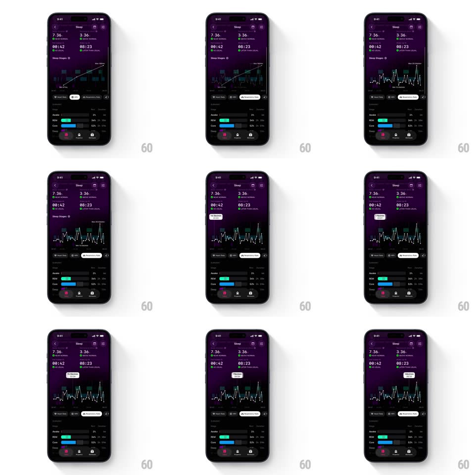

Media
Frame-by-frame

Rebuild this interaction 1:1: The Outsiders' sleep graph - the main chart morphs between a colored sleep-stages block chart and a white respiratory-rate line graph, and scrubbing slides a tooltip along the x-axis reading values live ("Core", "12.1 breaths/min", "Asleep").

Rebuild this interaction 1:1: The Outsiders' sleep graph - the main chart morphs between a colored sleep-stages block chart and a white respiratory-rate line graph, and scrubbing slides a tooltip along the x-axis reading values live ("Core", "12.1 breaths/min", "Asleep").
## Integration
Integration: stack-agnostic spec - springs given as stiffness/damping, timed motions as duration + curve; map every value to your framework and animation library of choice.
## Scene
Dark purple "Sleep" screen: stat row (7:36 time asleep, 3:36 deep, 00:42 awake, 08:23 core, each with a green delta), the main chart with tab pills ("Heart Rate", "Respiratory Rate") beneath it, then stage breakdown bars (Awake 5%, REM 34%, Core 52%, Deep 9%) as colored horizontal bars, and the bottom tab bar.
## Motion spec
Pattern: morphing chart with scrub tooltip, gesture-driven.
- Morph: switching tabs crossfades + redraws the chart (350ms, ease-in-out) - the block chart's bars collapse into the line graph's path (y-values interpolate) and axes swap labels.
- Scrub: touching the chart shows a vertical crosshair with a tooltip pill above; dragging moves it 1:1, the pill updating its value per sample (120ms fade between value changes) and flipping sides near the edges.
- Stage blocks: in stages mode, the scrubbed segment highlights (opacity 1 vs 0.5) and the pill names the stage.
- Breakdown bars: stage bars animate width from 0 on load (600ms, ease-out, 80ms stagger).
## Calibration
- The pill never leaves the chart's bounds; it clamps and flips.
- Scrubbing works in both chart modes with per-mode value formatting.
## Reduced motion
Chart swaps with a 200ms fade; tooltip appears at tap point without drag tracking.
## Don't miss
- The morph interpolates the shapes themselves - it is not a hard swap of two images.
- The tooltip shows units ("breaths/min") in rate mode and stage names in stages mode.